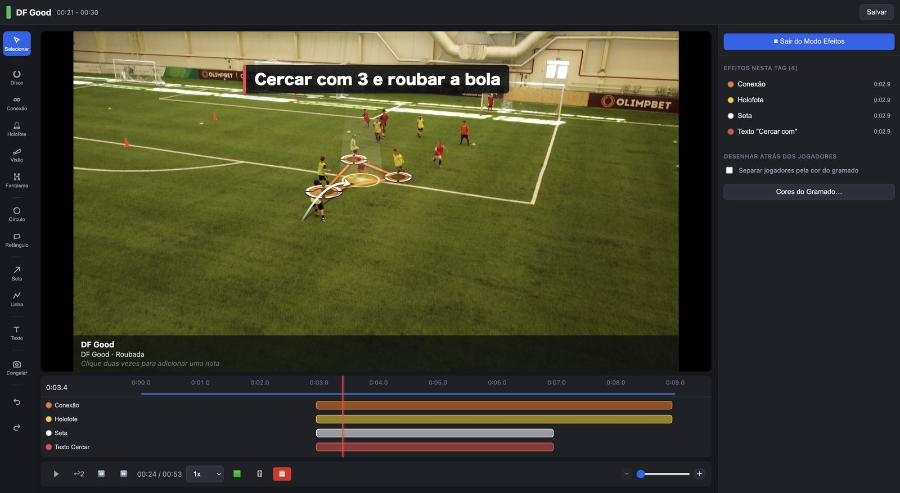
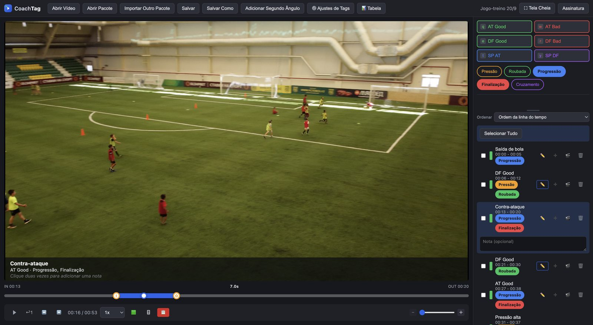
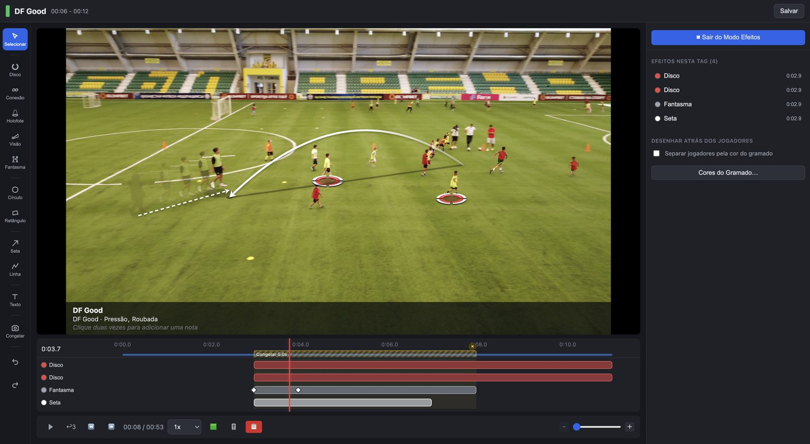
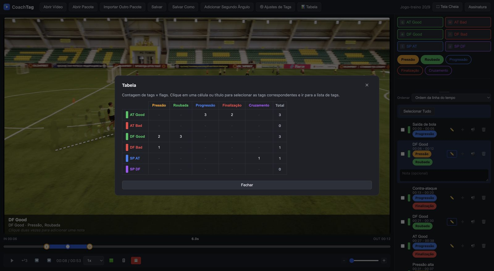

Visão
Mostre para onde o jogador olha com um cone dos pés ou da altura dos olhos.
Criado por um analista profissional campeão da J1 League, o CoachTag reúne em um só app os recursos que os analistas realmente usam. Faça o mesmo trabalho sem equipamentos caros.

Registre bons e maus momentos no ataque e na defesa, bolas paradas e mais, sem pausar. Adicione flags (pressão, roubada, finalização e mais) para classificar cada lance.

Conexão, Holofote, setas, texto e zonas. O CoachTag detecta a cor do gramado para os desenhos ficarem nos pés dos jogadores.
O disco acompanha o jogador mesmo com a câmera em movimento. Use o Fantasma para levar o jogador aonde ele deveria estar.

Clique em uma célula da tabela para selecionar os lances e transformá-los em uma playlist.

Mostre para onde o jogador olha com um cone dos pés ou da altura dos olhos.
Setas que combinam altura e curva, com sombra no chão.
Pause para explicar e anime os efeitos no tempo.
Reúna lances de várias partidas e veja tudo no quadro de tags.
Sincronize duas câmeras para revisar e exportar lado a lado.
Clipes com os desenhos gravados, para AirDrop, Fotos ou Arquivos.
"Só os recursos que os analistas realmente usam, em um só app."
Seus vídeos nunca saem do seu dispositivo. Marcação, desenho e exportação acontecem no seu Mac ou iPad.
Os dois planos funcionam no Mac e no iPad. O primeiro mês é grátis.